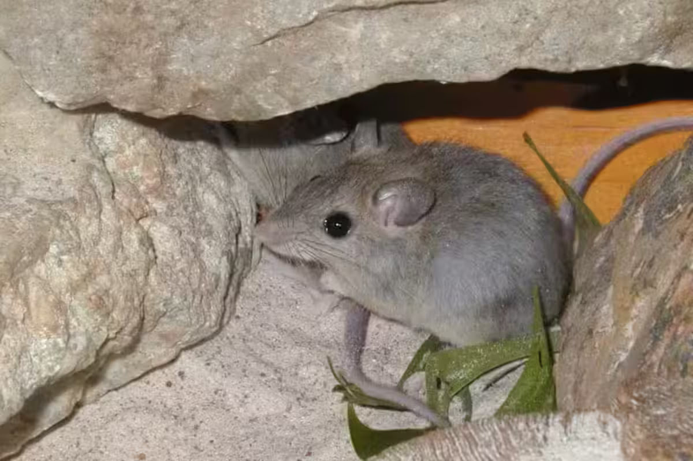

Carpentarian Rock Rat Zyzomys palatalis The Carpentarian Rock Rat is an endangered rodent found in a small region of northern Australia. These elusive animals are known for their robust build, thick tail, and habitat preference for rocky outcrops and escarpments.

Habitat
Carpentarian Rock Rats inhabit the rugged, rocky landscapes of the Gulf of Carpentaria in northern Australia. They prefer areas with abundant rock crevices and shelters, which provide protection from predators and harsh weather conditions.
Diet
The diet of Carpentarian Rock Rats primarily consists of seeds, fruits, and other plant materials. They are also known to consume insects and other small invertebrates. Their foraging habits are adapted to the sparse resources available in their rocky habitat.
Conservation Status
Carpentarian Rock Rats are listed as endangered due to their limited distribution and declining population. Major threats include habitat destruction, altered fire regimes, and predation by introduced species. Conservation efforts focus on habitat protection, fire management, and predator control.
How to Help
You can help protect Carpentarian Rock Rats by supporting conservation organizations, advocating for the protection of their rocky habitats, and raising awareness about their endangered status. Donations to wildlife conservation groups and volunteering your time to help with local conservation efforts are essential for their survival.
"Saving Australia's Endangered, Together for a Wilder Future"